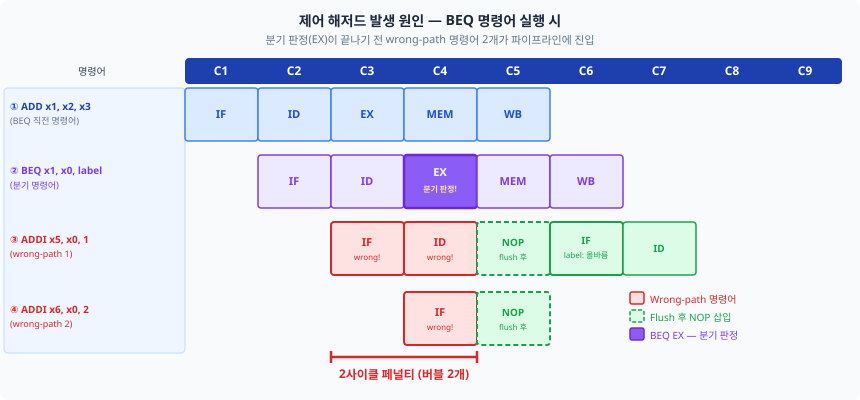
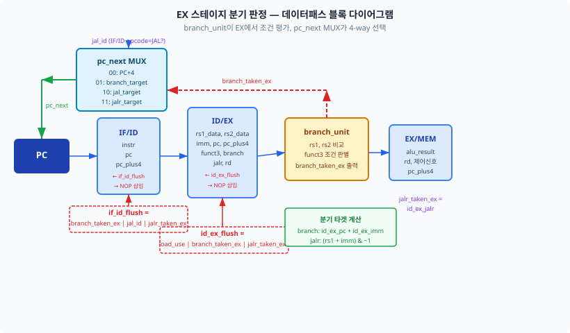
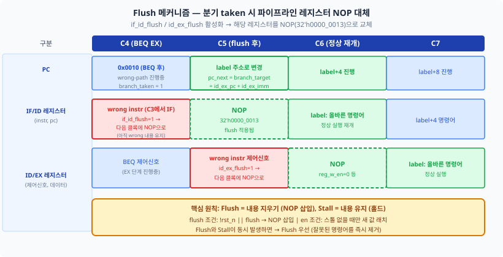
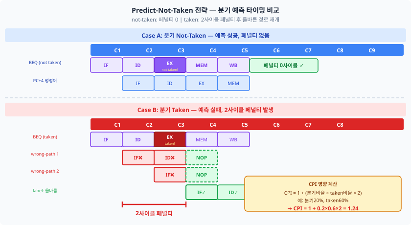
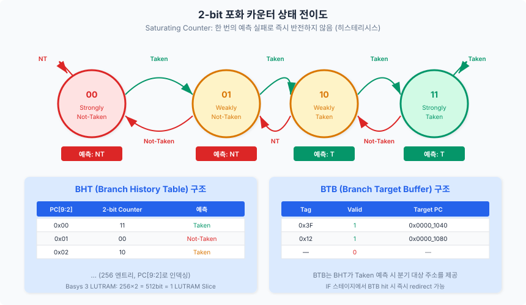
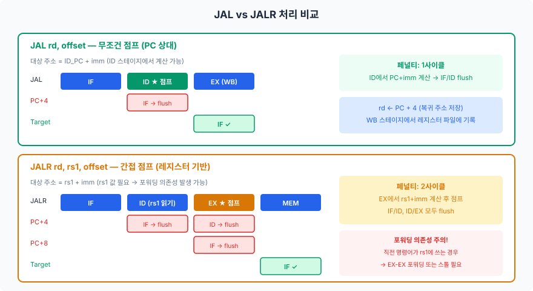
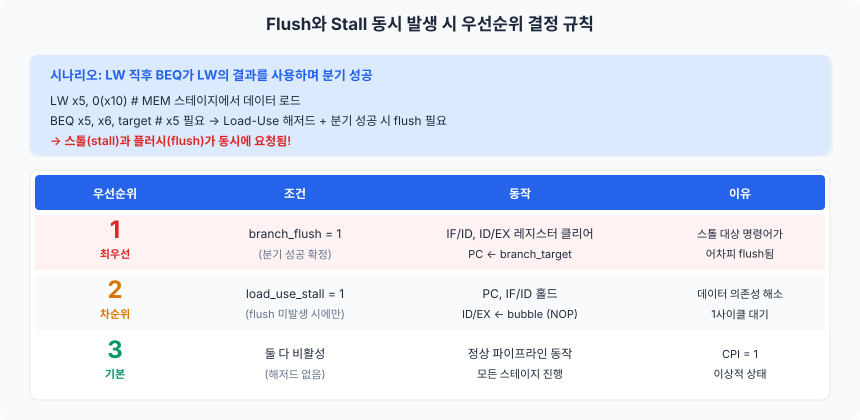

Chapter 10에서 데이터 해저드를 포워딩과 스톨로 해결했다면, 이 챕터에서는 파이프라인의 두 번째 적(敵)인 제어 해저드(Control Hazard)에 맞서 싸웁니다. 분기(branch)와 점프(jump) 명령어가 "다음에 실행할 명령어의 주소"를 바꿀 때 발생하는 이 문제를 분석하고, flush 메커니즘, 정적/동적 분기 예측, 그리고 JAL/JALR 처리까지 완전히 해결하는 과정을 학습합니다.
Chapter 10에서 데이터 해저드를 정복한 직후 이 챕터를 펼친 독자는, 잠시 긴장을 풀어도 좋습니다. 제어 해저드의 핵심 개념은 데이터 해저드보다 단순합니다. 그 이유는 명확합니다. 데이터 해저드는 "어떤 레지스터에 어떤 값이 언제 준비되는가"라는 복잡한 의존성 분석이 필요했지만, 제어 해저드는 "다음에 fetch할 명령어의 주소(PC)를 아직 모른다"라는 단 하나의 문제에서 출발합니다.
5단계 파이프라인 프로세서에서 프로그램 카운터(PC, Program Counter)는 매 사이클마다 다음 명령어의 주소를 결정합니다.
산술/논리 명령어와 로드/스토어 명령어의 경우, 다음 PC는 단순히 PC + 4입니다.
이 예측이 정확하므로 파이프라인은 아무런 문제 없이 매 사이클 새로운 명령어를 fetch할 수 있습니다.
그러나 분기 명령어(Branch Instruction)와 점프 명령어(Jump Instruction)는 이 가정을 무너뜨립니다.
BEQ x1, x2, target과 같은 분기 명령어는, 두 레지스터의 값을 비교한 결과에 따라
PC + 4 또는 target 중 하나로 점프합니다.
문제는, 이 비교 결과가 확정되는 시점이 IF 스테이지가 아니라 최소 EX 스테이지 이후라는 점입니다.
제어 해저드(Control Hazard)란, 분기 또는 점프 명령어의 실행으로 인해 다음에 fetch할 명령어의 주소(PC)가 현재 사이클에서 결정되지 않아 발생하는 파이프라인 정지 또는 낭비를 말합니다. 데이터 해저드(Data Hazard)가 "값"의 의존성이라면, 제어 해저드는 "주소"의 의존성입니다.
RV32I에서 제어 해저드를 유발하는 명령어는 세 가지 그룹입니다:
| 그룹 | 명령어 | 유형 | 대상 주소 계산 방식 |
|---|---|---|---|
| 조건 분기 | BEQ, BNE, BLT, BGE, BLTU, BGEU | B 타입 | PC + imm (조건 충족 시) |
| 무조건 점프 (직접) | JAL | J 타입 | PC + imm (항상) |
| 무조건 점프 (간접) | JALR | I 타입 | rs1 + imm (항상) |
제어 해저드 페널티의 크기는 분기 결과가 확정되는 스테이지에 의해 결정됩니다. 분기 결과가 늦게 확정될수록, 그 사이에 잘못 fetch된 명령어의 수가 늘어나므로 페널티가 커집니다.
| 분기 판정 스테이지 | 페널티 (사이클) | flush 대상 | 복잡도 |
|---|---|---|---|
| MEM (기본 구현) | 3 | IF/ID, ID/EX, EX/MEM | 낮음 |
| EX (이 책의 선택) | 2 | IF/ID, ID/EX | 중간 |
| ID (고급 구현) | 1 | IF/ID | 높음 |
이 책에서는 EX 스테이지에서 분기 결과를 판정하는 방식을 기본 구현으로 채택합니다. EX 스테이지에는 이미 ALU가 있으므로, 두 레지스터 값의 비교와 분기 대상 주소 계산을 추가 하드웨어 없이 수행할 수 있어 구현 복잡도와 페널티 사이의 균형이 좋기 때문입니다.

11.1절에서 분기 판정 시점이 페널티를 결정한다는 것을 확인했습니다. 이 절에서는 우리의 파이프라인이 EX 스테이지에서 분기 결과를 확정하도록 설계하고, 이를 통해 MEM 판정 대비 1사이클의 페널티를 절감하는 방법을 구체적으로 살펴봅니다.
EX 스테이지에서 분기를 판정하려면 두 가지 연산이 필요합니다:
rs1과 rs2의 값을 비교하여 분기 조건(BEQ, BNE 등)의 성립 여부를 판정합니다.
이 비교는 ALU 또는 별도의 비교기(comparator)를 사용합니다.PC + imm을 덧셈기(adder)로 계산합니다.
이 덧셈기는 ALU와 별도로 배치하거나, ALU를 재사용할 수 있습니다.두 연산이 모두 완료되면, 분기 성공(Taken) 여부와 분기 대상 주소(Branch Target)가 확정됩니다. 이 정보를 파이프라인 제어 로직에 전달하여, 잘못 fetch된 명령어를 무효화하고 올바른 주소에서 fetch를 재개합니다.

분기 조건 비교를 위한 하드웨어는 funct3 필드에 따라 6가지 비교 연산을 수행해야 합니다.
다음은 분기 판정 로직의 핵심 부분입니다:
// 분기 조건 판정 (EX 스테이지)
logic branch_cond;
always_comb begin
branch_cond = 1'b0;
case (ex_funct3)
3'b000: branch_cond = (ex_rs1_data == ex_rs2_data); // BEQ
3'b001: branch_cond = (ex_rs1_data != ex_rs2_data); // BNE
3'b100: branch_cond = ($signed(ex_rs1_data) <
$signed(ex_rs2_data)); // BLT
3'b101: branch_cond = ($signed(ex_rs1_data) >=
$signed(ex_rs2_data)); // BGE
3'b110: branch_cond = (ex_rs1_data < ex_rs2_data); // BLTU
3'b111: branch_cond = (ex_rs1_data >= ex_rs2_data); // BGEU
default: branch_cond = 1'b0;
endcase
end
// 분기 성공 여부
assign branch_taken = (ex_branch & branch_cond) | ex_jal | ex_jalr;
여기서 중요한 점은 ex_rs1_data와 ex_rs2_data가 포워딩 적용 후의 값이어야 한다는 것입니다.
Chapter 10에서 설계한 포워딩 유닛이 EX 스테이지에 올바른 값을 공급해야만, 분기 조건 비교가 정확합니다.
이것이 데이터 해저드 해결과 제어 해저드 해결이 서로 연결되는 지점입니다.
페널티를 1사이클로 더 줄이고 싶다면, 분기 판정을 ID 스테이지로 이동할 수 있습니다. ID 스테이지에서 레지스터 파일의 출력을 바로 비교기에 연결하면, 분기 결과를 1사이클 일찍 확정할 수 있습니다.
그러나 ID 스테이지 판정에는 다음과 같은 추가 복잡성이 수반됩니다:
rd = x0인 명령어의 결과를 포워딩하지 않도록 ID 단계 포워딩에서도 검사해야 합니다.이러한 복잡성 때문에 교육용 프로세서에서는 EX 스테이지 판정이 더 적합합니다. 실무에서도 ID 판정은 주로 분기 예측과 함께 사용되며, 단독으로 사용하는 경우는 드뭅니다.
분기가 성공(Taken)하면, 분기 명령어 이후에 이미 파이프라인에 진입한 명령어들은 잘못된 명령어입니다. 이들을 무효화하는 것이 플러시(Flush) 메커니즘입니다. EX 스테이지에서 분기를 판정하는 경우, flush 대상은 IF/ID 레지스터와 ID/EX 레지스터 두 곳입니다.
Flush는 개념적으로 단순합니다: 파이프라인 레지스터 안의 제어 신호를 모두 0으로 클리어하면,
해당 명령어는 아무런 동작도 수행하지 않는 버블(Bubble), 즉 NOP와 동일한 상태가 됩니다.
레지스터에 쓰기(RegWrite = 0), 메모리에 쓰기(MemWrite = 0), 분기(Branch = 0) 등 모든 제어 신호가 비활성화되므로,
flush된 명령어는 파이프라인을 통과하면서 아무런 부작용(side effect)도 남기지 않습니다.
동시에, PC에는 분기 대상 주소(branch_target)를 기록합니다. 다음 사이클부터 이 주소에서 올바른 명령어를 fetch하게 됩니다.

IF/ID 파이프라인 레지스터에 flush 기능을 추가하는 방법은 간단합니다.
기존의 always_ff 블록에 flush 조건을 추가하면 됩니다:
// IF/ID 파이프라인 레지스터 (flush 기능 포함)
always_ff @(posedge clk or negedge rst_n) begin
if (!rst_n) begin
if_id_pc <= 32'b0;
if_id_instr <= 32'h0000_0013; // NOP (ADDI x0, x0, 0)
end
else if (if_id_flush) begin
// Flush: 제어 신호를 NOP으로 초기화
if_id_pc <= 32'b0;
if_id_instr <= 32'h0000_0013; // NOP
end
else if (if_id_write) begin
// 정상 동작 또는 Stall 시 홀드
if_id_pc <= if_pc;
if_id_instr <= if_instr;
end
// if_id_write = 0이면 현재 값 유지 (스톨)
end
여기서 주목할 점은 if_id_flush와 if_id_write의 우선순위입니다.
if_id_flush가 if_id_write보다 우선하도록 코딩해야 합니다.
즉, flush 요청이 있으면 write 여부와 관계없이 레지스터를 클리어합니다.
이것이 "flush가 stall보다 우선한다"는 규칙의 하드웨어 구현입니다.
ID/EX 파이프라인 레지스터도 동일한 패턴으로 구현합니다. 다만 ID/EX에는 제어 신호 필드가 더 많으므로, flush 시 모든 제어 신호(RegWrite, MemWrite, MemRead, Branch, ALUSrc 등)를 0으로 클리어해야 합니다.
"Flush"와 "NOP 삽입"은 결과적으로 같은 효과(명령어 무효화)를 냅니다만, 구현 관점에서 차이가 있습니다.
| 구분 | NOP 삽입 (소프트웨어) | Flush (하드웨어) |
|---|---|---|
| 주체 | 컴파일러/어셈블러가 NOP 명령어를 미리 삽입 | 하드웨어가 실행 중 동적으로 무효화 |
| 코드 크기 | 증가 (추가 NOP이 메모리에 저장) | 변화 없음 |
| 유연성 | 정적 (컴파일 시점에 결정) | 동적 (실행 시점에 결정) |
현대 프로세서에서는 하드웨어 flush가 표준이며, NOP 삽입은 교육 목적으로만 사용됩니다. Chapter 9에서 "해저드 없는 파이프라인"을 NOP으로 구현했던 것은 개념 이해를 위한 것이었고, 이제부터는 모두 하드웨어 flush로 대체합니다.
EX 스테이지에서 분기를 판정하면 2사이클 페널티가 발생합니다.
그러나 이 페널티는 분기가 성공(Taken)했을 때만 발생한다는 점에 주목하십시오.
만약 분기가 실패(Not-Taken)했다면, PC + 4에서 fetch한 명령어가 정확하므로 페널티는 0입니다.
이 관찰에서 Predict-Not-Taken(분기하지 않을 것으로 예측) 전략이 탄생합니다.
파이프라인은 모든 분기 명령어에 대해 "분기하지 않을 것"이라고 가정하고,
PC + 4에서 계속 명령어를 fetch합니다.
예측이 맞으면(실제로 Not-Taken) 페널티 0, 예측이 틀리면(실제로 Taken) 2사이클 페널티를 지불합니다.
이 전략에서는 별도의 예측 하드웨어가 필요하지 않습니다.
파이프라인의 기본 동작인 PC ← PC + 4가 곧 "Not-Taken 예측"이기 때문입니다.
EX 스테이지에서 분기 결과가 확정된 후, 실제로 Taken이었다면 그때 flush와 PC 갱신을 수행합니다.

Predict-Not-Taken 전략의 성능을 수식으로 분석해 봅시다. 평균 CPI(Cycles Per Instruction)는 다음과 같이 계산됩니다:
CPI = 1 + (분기 명령어 비율) × (분기 성공률) × (페널티)
일반적인 프로그램의 통계를 적용하면:
따라서: CPI = 1 + 0.20 × 0.60 × 2 = 1.24
이는 이상적인 CPI = 1 대비 24%의 성능 저하를 의미합니다. Load-Use 스톨(Chapter 10)과 합치면, 실제 CPI는 1.3 이상으로 올라갈 수 있습니다. 이 성능 손실을 줄이기 위해 11.5절에서 동적 분기 예측을 소개합니다.
"분기가 성공할 확률이 더 높다면, Predict-Taken이 나은 것 아닌가?"라는 질문이 나올 수 있습니다. 이론적으로는 맞지만, 하드웨어 구현에서는 차이가 있습니다. Predict-Taken을 구현하려면 IF 스테이지에서 이미 분기 대상 주소(branch target)를 알아야 합니다. 그러나 IF 스테이지에서는 명령어를 아직 디코딩하지 않았으므로, 분기 대상 주소를 계산할 수 없습니다. BTB(Branch Target Buffer)와 같은 추가 하드웨어 없이는 Predict-Taken을 구현할 수 없으며, 이는 11.5절의 동적 분기 예측 영역에 해당합니다.
정적 분기 예측의 한계를 극복하기 위해, 동적 분기 예측(Dynamic Branch Prediction)은 프로그램의 실행 이력(history)을 기반으로 분기 결과를 예측합니다. 이 절에서는 가장 기본적이면서도 효과적인 2-bit 포화 카운터(2-bit Saturating Counter) 기반 분기 이력 테이블(BHT, Branch History Table)을 설계합니다.
먼저 1-bit 예측기를 생각해 봅시다. 1-bit 예측기는 "마지막 분기 결과"를 그대로 다음 예측에 사용합니다. 상태는 두 가지: Not-Taken(0)과 Taken(1)입니다.
이중 루프(nested loop)에서 1-bit 예측기의 문제점이 드러납니다. 내부 루프가 끝나고 외부 루프로 돌아올 때, 내부 루프의 마지막 분기(Not-Taken)가 예측기를 NT로 바꿉니다. 그런데 다음 외부 루프 반복에서 내부 루프에 다시 진입하면, 첫 번째 분기가 Taken인데 예측이 NT이므로 실패합니다. 이처럼 루프 경계에서 매번 2번의 예측 실패가 발생합니다.
2-bit 포화 카운터는 4가지 상태를 가집니다:
| 상태 값 | 이름 | 예측 | 설명 |
|---|---|---|---|
00 |
Strongly Not-Taken | Not-Taken | 연속 Not-Taken 이력. 확신도 높음 |
01 |
Weakly Not-Taken | Not-Taken | Not-Taken이지만 확신도 낮음 |
10 |
Weakly Taken | Taken | Taken이지만 확신도 낮음 |
11 |
Strongly Taken | Taken | 연속 Taken 이력. 확신도 높음 |
핵심은 "한 번의 예측 실패로 즉시 반전하지 않는다"는 것입니다. Strongly Taken(11) 상태에서 Not-Taken이 한 번 발생하면 Weakly Taken(10)으로 이동하지만, 여전히 Taken으로 예측합니다. 연속 두 번 Not-Taken이 발생해야 Not-Taken(01 또는 00)으로 전환됩니다. 이 히스테리시스 특성 덕분에 이중 루프 경계에서의 오예측이 1번으로 줄어듭니다.

BHT는 PC의 하위 비트를 인덱스로 사용하여 2-bit 카운터 배열에 접근하는 구조입니다. 태그(tag) 비교를 하지 않으므로, 서로 다른 분기 명령어가 같은 엔트리를 공유할 수 있습니다(aliasing). 이 aliasing은 정확도를 다소 떨어뜨리지만, 하드웨어를 극적으로 단순화합니다.
// BHT: 256 엔트리, PC[9:2]로 인덱싱
logic [1:0] bht [256];
// 예측 (IF 스테이지, 조합 논리)
assign predict_taken = bht[if_pc[9:2]][1]; // MSB = 1이면 Taken
// 갱신 (EX 스테이지 결과 반영)
always_ff @(posedge clk or negedge rst_n) begin
if (!rst_n) begin
for (int i = 0; i < 256; i++)
bht[i] <= 2'b01; // 초기값: Weakly Not-Taken
end
else if (ex_branch_valid) begin
if (ex_branch_taken && bht[ex_pc[9:2]] < 2'b11)
bht[ex_pc[9:2]] <= bht[ex_pc[9:2]] + 2'b01; // 증가
else if (!ex_branch_taken && bht[ex_pc[9:2]] > 2'b00)
bht[ex_pc[9:2]] <= bht[ex_pc[9:2]] - 2'b01; // 감소
end
end
256 엔트리 × 2-bit = 512 비트. Basys 3의 Artix-7 FPGA에서 이는 LUTRAM(분산 RAM) 1~2개 슬라이스로 구현됩니다. 전체 LUT 예산(20,800개)의 0.01% 미만이므로, BHT 추가에 따른 자원 부담은 무시할 수 있습니다.
| BHT 크기 | 엔트리 수 | 총 비트 | LUTRAM 슬라이스 | LUT 사용률 |
|---|---|---|---|---|
| 64 엔트리 | 64 | 128 bit | ~1 | < 0.01% |
| 256 엔트리 (권장) | 256 | 512 bit | ~2 | < 0.01% |
| 1024 엔트리 | 1024 | 2048 bit | ~8 | < 0.05% |
256 엔트리를 권장하는 이유는, 대부분의 교육용 프로그램(버블 정렬, 피보나치 등)의 분기 명령어 수가 256개 이하이며, 더 큰 BHT는 aliasing을 줄이지만 성능 향상이 미미하기 때문입니다.
BHT가 "분기할 것인가?"를 예측한다면, BTB(Branch Target Buffer)는 "분기한다면 어디로 갈 것인가?"를 저장합니다. BTB는 작은 캐시와 유사한 구조로, 분기 명령어의 PC를 태그로 사용하여 분기 대상 주소를 저장합니다.
BHT와 BTB를 조합하면 IF 스테이지에서 분기 예측과 대상 주소를 동시에 제공할 수 있으므로, 예측이 맞을 때 페널티가 0이 됩니다. 그러나 BTB는 이 책의 범위를 넘어서는 심화 주제이므로, 개념만 소개하고 구현은 선택 과제로 남깁니다.
지금까지는 조건 분기(B 타입) 명령어의 제어 해저드를 다루었습니다.
이 절에서는 무조건 점프 명령어인 JAL과 JALR의 처리 방식을 살펴봅니다.
두 명령어 모두 "항상 점프"한다는 공통점이 있지만, 대상 주소의 계산 방식이 근본적으로 다르므로 파이프라인에서의 처리도 달라집니다.
JAL rd, offset 명령어는 다음 두 가지 동작을 수행합니다:
JAL의 핵심 특성은 대상 주소가 PC 상대(PC-relative)라는 점입니다.
즉, PC + imm을 계산하는 데 레지스터 값이 필요하지 않습니다.
이 계산은 IF 스테이지의 PC와 ID 스테이지에서 추출한 즉치수만 있으면 수행 가능하므로,
이론적으로 ID 스테이지에서 점프 대상 주소를 확정할 수 있습니다.
ID 스테이지에서 JAL을 감지하면:
혹은 EX 스테이지에서 처리하면 2사이클 페널티가 되지만 구현이 더 단순합니다. 이 책에서는 일관성을 위해 EX 스테이지에서 JAL을 처리하되, ID 스테이지로 최적화하는 방법도 함께 소개합니다.
JALR rd, rs1, offset 명령어는:
JALR의 핵심 차이점은 대상 주소 계산에 rs1 레지스터의 값이 필요하다는 것입니다.
rs1 값은 ID 스테이지에서 레지스터 파일로부터 읽거나 포워딩으로 받아야 합니다.
특히, 직전 명령어가 rs1에 값을 쓰는 경우, EX-EX 포워딩이 필요하며,
직전 명령어가 LW(로드)인 경우 Load-Use 스톨까지 발생할 수 있습니다.
// JALR 대상 주소 계산 (EX 스테이지)
// rs1_data는 포워딩 유닛을 통해 최신 값이 공급되어야 함
always_comb begin
if (ex_jalr)
branch_target = (ex_rs1_data + ex_imm) & 32'hFFFF_FFFE;
else
branch_target = ex_pc + ex_imm; // B 타입 및 JAL
end
LSB를 0으로 클리어하는 & 32'hFFFF_FFFE 연산은 RISC-V 스펙의 요구사항입니다.
RV32I에서 모든 명령어는 4바이트 정렬(4-byte aligned)되어야 하므로, 하위 2비트가 00이어야 합니다.
그러나 RISC-V에는 2바이트 압축 명령어(C 확장)가 있으므로, 스펙은 LSB만 클리어하도록 정의합니다.

JALR은 rs1 값에 의존하므로, Chapter 10에서 설계한 포워딩 유닛과 긴밀하게 연동해야 합니다. 다음 코드 시퀀스를 생각해 보십시오:
// 포워딩이 필요한 JALR 시나리오
ADD x1, x2, x3 // EX 스테이지에서 x1 = x2 + x3 계산
JALR x0, x1, 0 // x1 값 필요 → EX-EX 포워딩 발생
ADD가 EX 스테이지에서 결과를 생성하는 동일 사이클에 JALR도 EX 스테이지에 있으므로,
포워딩 유닛이 ADD의 ALU 결과를 JALR의 rs1 입력으로 전달해야 합니다.
이것은 Chapter 10에서 이미 구현한 EX-EX 포워딩 경로와 동일하며, 추가 하드웨어가 필요하지 않습니다.
그러나 다음 시퀀스에서는 스톨이 필요합니다:
// 스톨이 필요한 JALR 시나리오
LW x1, 0(x10) // MEM 스테이지에서 x1 로드
JALR x0, x1, 0 // x1 값 필요 → Load-Use 스톨 1사이클
이 경우 LW의 결과는 MEM 스테이지 이후에야 사용 가능하므로, JALR은 1사이클 스톨 후 MEM-EX 포워딩으로 값을 받습니다.
이미 Chapter 10의 Load-Use 스톨 감지 로직이 이 상황을 처리하므로, JALR을 위한 별도의 스톨 로직은 필요하지 않습니다.
이 절에서는 11.2~11.6절에서 설계한 제어 해저드 처리 로직을 검증하는 테스트벤치를 작성합니다. 제어 해저드 테스트벤치의 핵심은 분기 성공/실패 시나리오를 망라하고, 특히 데이터 해저드와 제어 해저드가 중첩되는 경우(flush와 stall 동시 발생)를 올바르게 처리하는지 확인하는 것입니다.
다음 6가지 시나리오를 체계적으로 검증합니다:
| # | 시나리오 | 기대 동작 | 검증 포인트 |
|---|---|---|---|
| 1 | BEQ Taken (rs1 == rs2) | branch_taken=1, flush 발생 | branch_target 정확성 |
| 2 | BEQ Not-Taken (rs1 != rs2) | branch_taken=0, flush 미발생 | 정상 파이프라인 진행 |
| 3 | BNE Taken (음수 오프셋) | branch_taken=1, backward branch | 음수 즉치수 처리 |
| 4 | JAL 무조건 점프 | 항상 taken, PC+imm | branch_target = PC + offset |
| 5 | JALR 간접 점프 | 항상 taken, (rs1+imm)&~1 | LSB 클리어, 포워딩 값 사용 |
| 6 | Load-Use + Branch Taken | Flush 우선 (스톨 무시) | pc_write=1, if_id_flush=1 |
시나리오 6은 이 챕터에서 가장 중요한 검증 항목입니다. flush와 stall이 동시에 발생할 때의 우선순위 규칙을 다시 한번 명확히 정리합니다:

테스트벤치의 전체 코드는 code_examples/ch11_control_hazard_tb.sv에 있습니다.
여기서는 시나리오 6(중첩 해저드)의 핵심 부분을 살펴봅니다:
// 시나리오 6: Load-Use + Branch Taken (Flush 우선 확인)
// Load-Use 조건 설정
id_ex_mem_read = 1'b1; // Load 명령어가 ID/EX에 있음
id_ex_rd = 5'd5; // Load의 rd = x5
if_id_rs1 = 5'd5; // 다음 명령어가 x5를 사용 → 스톨 조건
// 동시에 분기 성공
ex_branch = 1'b1;
ex_funct3 = 3'b000; // BEQ
ex_rs1_data = 32'h7;
ex_rs2_data = 32'h7; // 같은 값 → Taken
#1; // 조합 논리 안정화
// 검증: Flush가 Stall보다 우선
assert(pc_write == 1'b1) // PC 갱신 허용 (스톨이면 0)
assert(if_id_flush == 1'b1) // IF/ID flush (스톨이면 0)
assert(id_ex_flush == 1'b1) // ID/EX flush
핵심 검증 포인트는 pc_write가 1이라는 것입니다.
만약 스톨이 우선했다면 pc_write = 0(PC 홀드)이 되어,
분기 대상 주소로의 점프가 1사이클 지연됩니다. 이는 프로그램의 올바른 실행을 보장하지 못합니다.
테스트벤치를 실행하는 방법은 다음과 같습니다:
// Vivado Simulator
xvlog ch11_branch_control.sv ch11_hazard_control_unit.sv ch11_control_hazard_tb.sv
xelab -debug typical control_hazard_tb
xsim control_hazard_tb -runall
// VCS
vcs -sverilog ch11_branch_control.sv ch11_hazard_control_unit.sv ch11_control_hazard_tb.sv
./simv
모든 테스트가 통과하면 다음과 같은 출력이 나타납니다:
--- 테스트 1: BEQ Taken ---
[PASS] BEQ Taken
--- 테스트 2: BEQ Not-Taken ---
[PASS] BEQ Not-Taken
--- 테스트 3: BNE Taken ---
[PASS] BNE Taken
--- 테스트 4: JAL ---
[PASS] JAL
--- 테스트 5: JALR ---
[PASS] JALR
--- 테스트 6: JALR LSB 클리어 ---
[PASS] JALR LSB clear
--- 테스트 7: Load-Use + Branch (Flush 우선) ---
[PASS] Flush 우선순위 확인: pc_write=1, if_id_flush=1
========================================
테스트 완료: PASS=7, FAIL=0
========================================
*** 모든 테스트 통과! ***
이 챕터에서는 파이프라인 프로세서의 두 번째 해저드인 제어 해저드를 분석하고 해결했습니다. Chapter 10의 데이터 해저드 해결과 합쳐, 우리의 파이프라인은 이제 대부분의 프로그램을 올바르게 실행할 수 있습니다.
LW x5, 0(x10) // 명령어 1
BEQ x5, x6, target // 명령어 2
ADD x7, x8, x9 // 명령어 3
01(Weakly Not-Taken)일 때,
분기 결과 시퀀스 T, T, NT, T, T, T, NT, NT에 대해 (a) 각 단계의 상태 전이와 (b) 예측 정확도(%)를 구하시오.
ch11_branch_control.sv에 BLT와 BGEU 분기 조건의 테스트 케이스를
테스트벤치에 추가하시오. 특히 부호 있는(signed) 비교에서 음수 값을 포함하는 경우를 검증하시오.